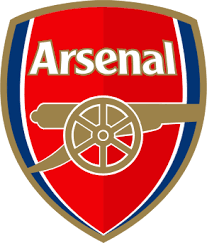
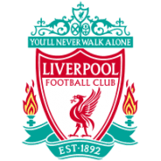
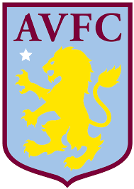

Se mostraran los primeros cinco equipos del torneo.
Se tendra en cuenta hasta la fecha Nº 8
| EQUIPO | PJ | V | E | D | GF | GC | DG | Puntos | |
|---|---|---|---|---|---|---|---|---|---|
 |
Tottenham | 8 | 6 | 2 | 0 | 18 | 8 | 10 | 20 |
|  | Arsenal | 8 | 6 | 2 | 0 | 16 | 6 | 10 | 20 |
 |
Manchester City | 8 | 6 | 0 | 2 | 17 | 6 | 11 | 18 |
|  | Liverpool | 8 | 5 | 2 | 1 | 18 | 9 | 9 | 17 |
|  | Aston Villa | 8 | 5 | 1 | 2 | 19 | 12 | 7 | 16 |
 Erling Braut Haaland - Manchester City (8)
Erling Braut Haaland - Manchester City (8)